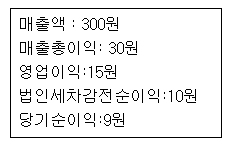

■ 포괄손익계산서란?
풀빵장사를 한다고 합시다. 오늘 하루 판매액이 1,000원인데 밀가루 사고, 연탄 사는데 든 비용이 600원이라면 내 주머니에 떨어지는 돈은 400원이 됩니다.
매출액(1000원)-원가(600원)=수익(400원)그런데 내 주머니에 떨어진 돈 400원을 모두 꿀꺽 할 수 있는 것은 아닙니다. 세금을 내어야하기 때문입니다. 따라서 세금을 비롯한 각종 비용을 내고나서 진짜로 내주머니에 떨어지는 돈은 다시 계산을 해야 합니다.
세금을 비롯한 온갖 잡비용이 200원이라면 진짜로 내 주머니에 떨어지는 돈은 200원이 됩니다.
수익(400원)-잡비용(200원)=당기순이익(200원)
포괄손익계산서는 이같은 원리를 이용해 각종 회사가 한해
동안 얼마나 돈을 벌었는지 계산한 것입니다. 실제의 포괄손익계산서가 어떤 모습을 하고 있는지 한번 보겠습니다.

처음 보는 단어가 몇 개 나오는데 하나하나 살펴 보겠습니다.
매출액
: 회사가
벌어들인 돈
매출총이익
: 매출액에서
재료비등을 빼고 남은돈
영업이익
: 매출총이이익에서
판매비와 관리비를 뺀 돈. 그야말로 순순하게 장사를 해서 벌어들인 돈.
법인세
차감전 순이익 :
세금을 내기 직전의 돈
당기순이익
: 낼
것 다내고, 진짜진짜 회사에 떨어지는 돈. 이 돈이 모이고 모여서 재무상태표의
이익잉여금이 됨.
이들 용어가 무엇을 뜻하는지 알았으니 위의 포괄손익계산서를 해석하는 것은 거져 먹기가 됩니다. 포괄손익계산서를 해석하면 다음과 같습니다.
‘1년 동안 장사를 해서 300원 어치를 팔았는데, 뺄 것 다 빼고 나니 주머니에 9원이 떨어졌음’